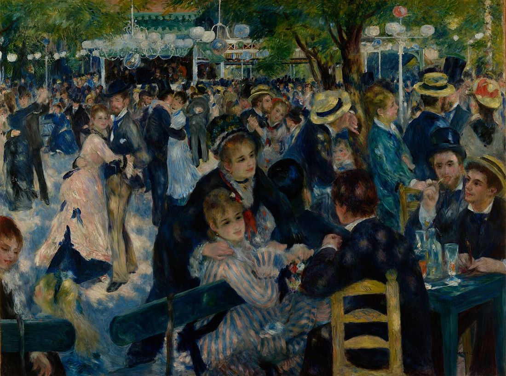
ANNAMARIA · mercredi 18 novembre 2026
Vocabulaire, expressions et grammaireMusique, sport et mariage · le futur simple et le pronom yMusica, sport e matrimonio · il futuro semplice e il pronome y
Auguste Renoir, Bal du moulin de la Galette, 1876 · Musée d'Orsay, Paris
Bonjour Annamaria ! Aujourd'hui, on passe de la musique au sport, puis on prépare un mariage. Tu révises le futur simple et tu découvres le pronom y.
Ciao Annamaria! Oggi passiamo dalla musica allo sport, poi prepariamo un matrimonio. Ripassi il futuro semplice e scopri il pronome y.
Touche une carte pour la retourner, le haut-parleur 🔊 pour écouter et IT pour la traduction. Essaie d'abord sans !
Tocca una carta per girarla, l'altoparlante 🔊 per ascoltare e IT per la traduzione. Prova prima senza!
Tes réponses restent enregistrées : tu peux fermer la page et revenir quand tu veux.
Le tue risposte restano salvate: puoi chiudere la pagina e tornare quando vuoi.
1
Vocabulaire et expressions
Lessico ed espressioni
A
Musique, sport et maison
Musica, sport e casa
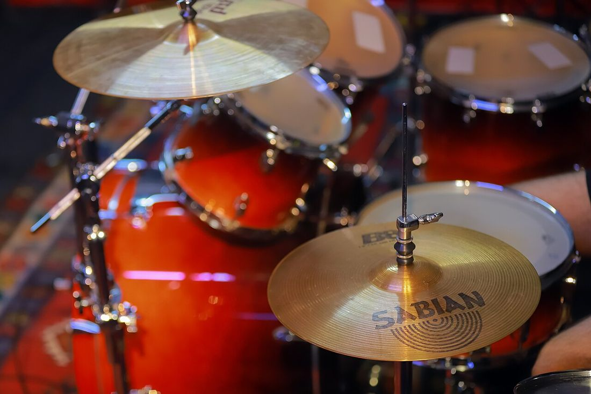
depuis l'été dernier
expression de temps
Une batterie, l'instrument de Paolo
↻ toucher pour retourner · toccare per girare
depuis l'été dernier dall'estate scorsa
Depuis + un moment du passé : l'action a commencé à ce moment et elle continue aujourd'hui. Le verbe est au présent, comme en italien.
Depuis + un momento del passato: l'azione è cominciata allora e continua oggi. Il verbo è al presente, come in italiano.
Paolo suit un cours de batterie depuis l'été dernier.
Paolo segue un corso di batteria dall'estate scorsa.
Je dessine tous les dimanches depuis le mois de septembre.
Disegno tutte le domeniche da settembre.
Avec une durée aussi : Paolo joue au basket depuis deux ans.
Anche con una durata: Paolo gioca a basket da due anni.
↻
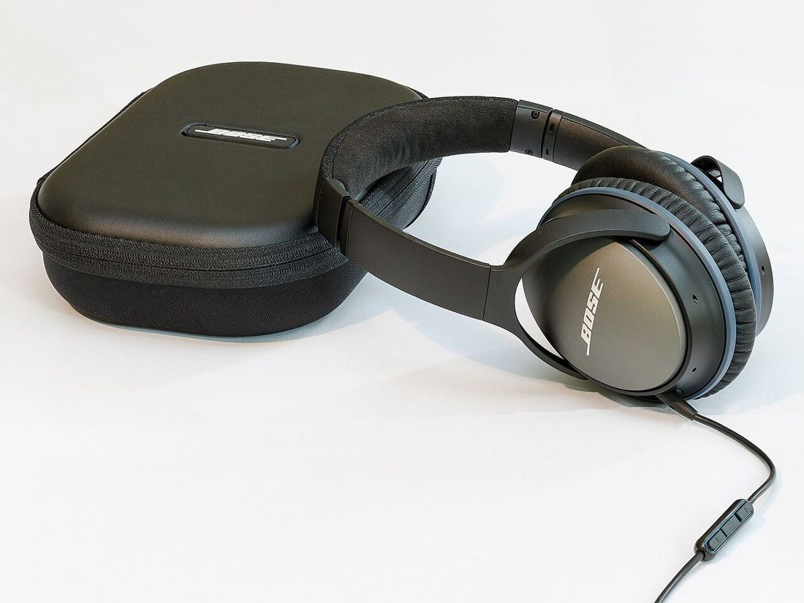
le casque · les écouteurs
noms masculins
Un casque audio
↻ toucher pour retourner · toccare per girare
le casque · les écouteurs le cuffie · gli auricolari
Le casque couvre les oreilles ; les écouteurs sont tout petits et entrent dans l'oreille. Attention : le casque est au singulier.
Le casque copre le orecchie; les écouteurs sono piccolissimi ed entrano nell'orecchio. Attenzione: le casque è al singolare.
Avec une batterie électronique et un casque, Paolo joue sans déranger les voisins.
Con una batteria elettronica e le cuffie, Paolo suona senza disturbare i vicini.
Dans le train, j'écoute de la musique avec mes écouteurs.
In treno ascolto la musica con i miei auricolari.
Un casque, c'est aussi la protection pour la tête : un casque de vélo, un casque d'équitation.
Un casque è anche la protezione per la testa: un casco da bici, un casco da equitazione.
↻
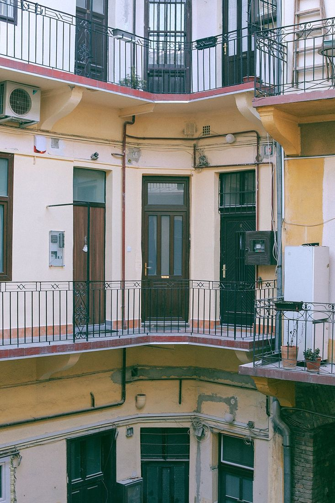
un immeuble
nom masculin
Un immeuble avec des balcons
↻ toucher pour retourner · toccare per girare
un immeuble un palazzo, un condominio
Un bâtiment de plusieurs étages, avec des appartements ou des bureaux. Faux ami : un immeuble n'est pas « un immobile » !
Un edificio di più piani, con appartamenti o uffici. Falso amico: un immeuble non è «un immobile»!
J'habite au troisième étage d'un immeuble près de la mer.
Abito al terzo piano di un palazzo vicino al mare.
Dans notre immeuble, il y a un ascenseur et une petite cour.
Nel nostro palazzo c'è un ascensore e un piccolo cortile.
« Un immobile » se dit un bien immobilier. Un palais, c'est un bâtiment historique et luxueux.
«Un immobile» si dice un bien immobilier. Un palais è un palazzo storico e lussuoso.
↻
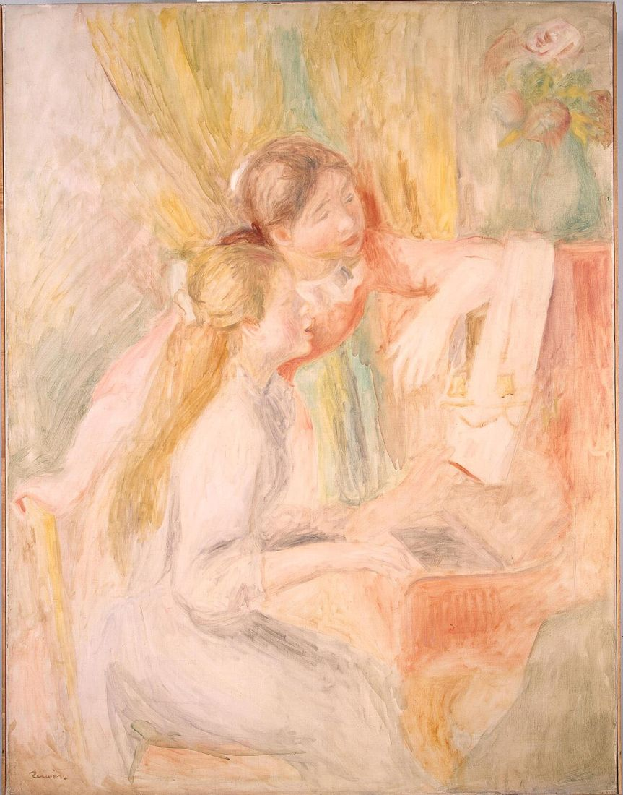
la partition · les notes · les instruments
noms
Auguste Renoir, Jeunes filles au piano, 1892
↻ toucher pour retourner · toccare per girare
la partition · les notes · les instruments lo spartito · le note · gli strumenti
Sur une partition, on lit les notes : do, ré, mi, fa, sol, la, si. Le piano, la guitare et la batterie sont des instruments.
Su uno spartito si leggono le note: do, re, mi, fa, sol, la, si. Il pianoforte, la chitarra e la batteria sono strumenti.
Paolo apprend à lire une partition de batterie.
Paolo impara a leggere uno spartito per batteria.
Dans un orchestre, il y a des dizaines d'instruments.
In un'orchestra ci sono decine di strumenti.
Un instrument : jouer du piano, de la batterie. Un sport : jouer au basket, au tennis.
Uno strumento: jouer du piano, de la batterie. Uno sport: jouer au basket, au tennis.
↻
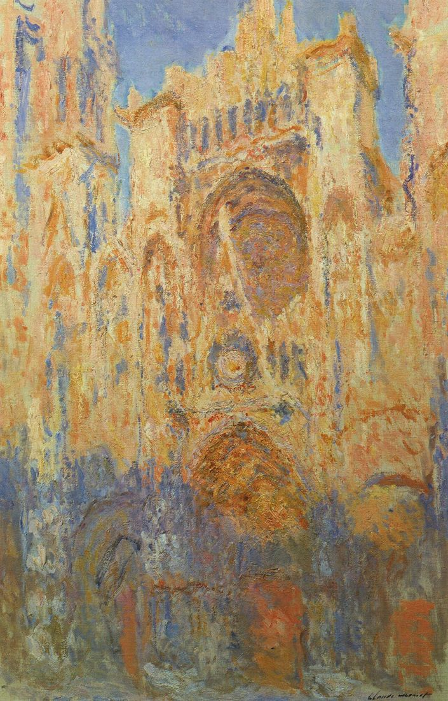
être différent de
adjectif + préposition
Claude Monet, La Cathédrale de Rouen, série de 1892-1894
↻ toucher pour retourner · toccare per girare
être différent de essere diverso da
Après différent, on met de. Attention : de + le = du, de + les = des. L'adjectif s'accorde : différent, différente, différents, différentes.
Dopo différent si mette de. Attenzione: de + le = du, de + les = des. L'aggettivo si accorda: différent, différente, différents, différentes.
Le basket est très différent du tennis.
Il basket è molto diverso dal tennis.
Monet a peint la même cathédrale trente fois : chaque toile est différente des autres.
Monet ha dipinto la stessa cattedrale trenta volte: ogni tela è diversa dalle altre.
Ta partition est différente de la mienne.
Il tuo spartito è diverso dal mio.
↻
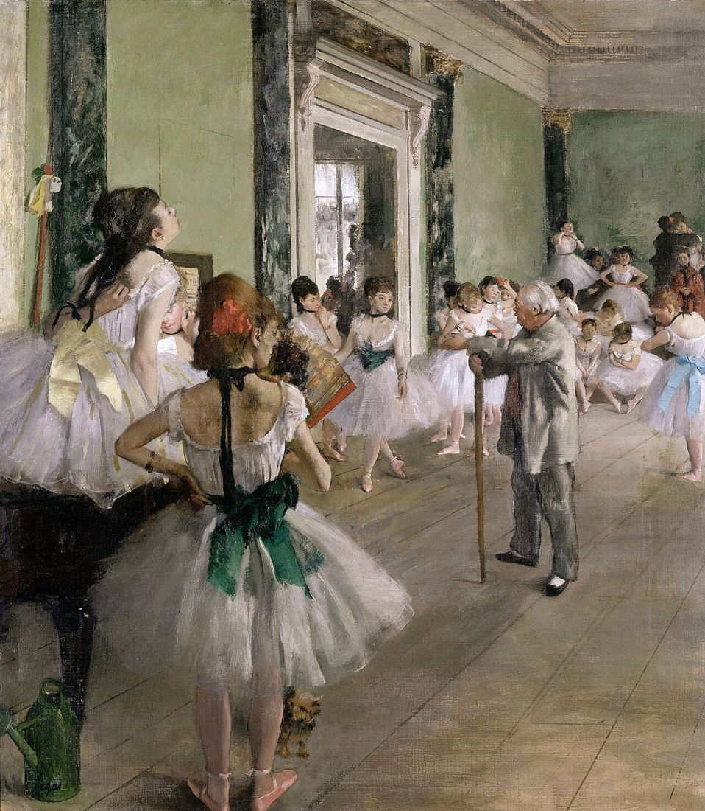
l'entraînement · s'entraîner
nom masculin · verbe pronominal
Edgar Degas, La Classe de danse, 1873-1876 · Musée d'Orsay, Paris
↻ toucher pour retourner · toccare per girare
l'entraînement · s'entraîner l'allenamento · allenarsi
Chez Degas, les danseuses s'entraînent avec leur professeur : c'est la classe de danse.
Nel quadro di Degas, le ballerine si allenano con il loro insegnante: è la lezione di danza.
Paolo a entraînement de basket le mercredi et le samedi.
Paolo ha allenamento di basket il mercoledì e il sabato.
Pour bien jouer, il faut s'entraîner régulièrement.
Per giocare bene bisogna allenarsi regolarmente.
On dit aller à l'entraînement ou avoir entraînement, sans article. L'entraîneur, c'est la personne qui entraîne l'équipe.
Si dice aller à l'entraînement o avoir entraînement, senza articolo. L'entraîneur è l'allenatore.
↻
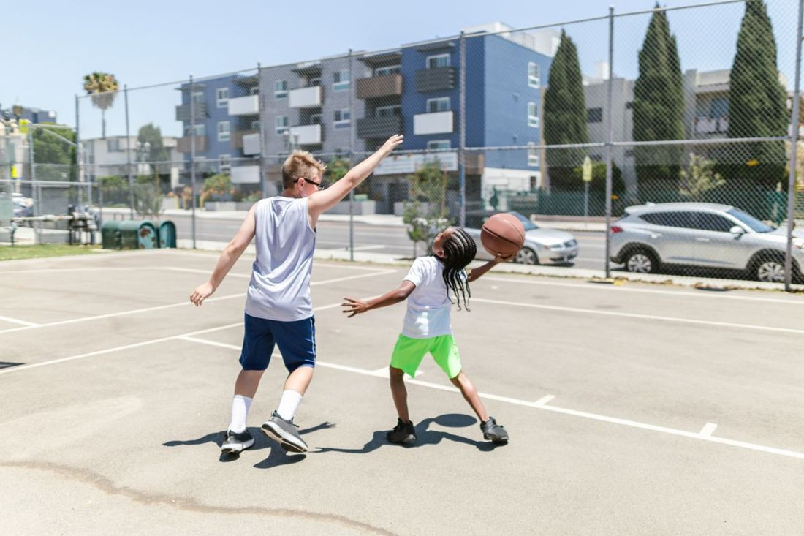
prenant, prenante
adjectif
Un match de basket entre enfants
↻ toucher pour retourner · toccare per girare
prenant, prenante impegnativo · avvincente
Une activité prenante occupe beaucoup de temps et d'énergie. Un livre ou un film prenant nous captive.
Un'attività prenante occupa molto tempo ed energia. Un libro o un film prenant ci cattura: è avvincente.
La batterie et le basket, c'est très prenant pour un enfant de huit ans !
La batteria e il basket sono molto impegnativi per un bambino di otto anni!
J'ai lu un roman très prenant : je ne pouvais plus m'arrêter.
Ho letto un romanzo molto avvincente: non riuscivo più a fermarmi.
↻
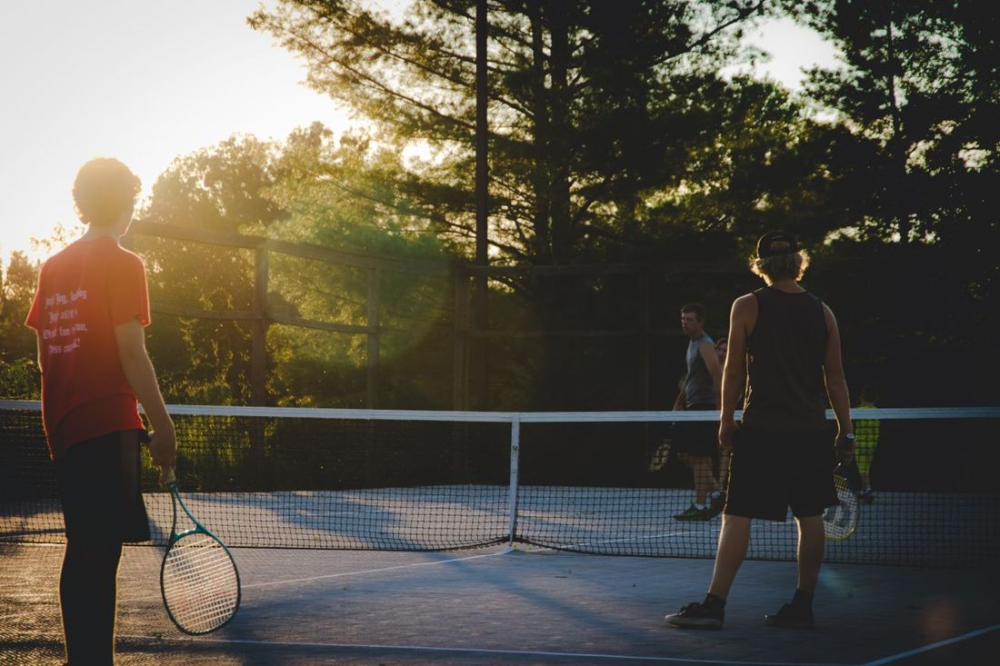
le tennis
nom masculin · prononciation
Une partie de tennis au coucher du soleil
↻ toucher pour retourner · toccare per girare
le tennis il tennis
Dans tennis, on prononce le s final. C'est la même chose pour quelques mots : le bus, le cactus, le maïs, un ours, le sens, mars.
In tennis si pronuncia la s finale. Succede anche in alcune parole: le bus, le cactus, le maïs, un ours, le sens, mars.
Le samedi matin, je joue au tennis avec une amie.
Il sabato mattina gioco a tennis con un'amica.
Le bus s'arrête juste devant notre immeuble.
L'autobus si ferma proprio davanti al nostro palazzo.
Mais le s reste muet dans : le temps, le dos, le repas, le bras.
Ma la s resta muta in: le temps, le dos, le repas, le bras.
↻
B
Le mariage et les fêtes
Il matrimonio e le feste
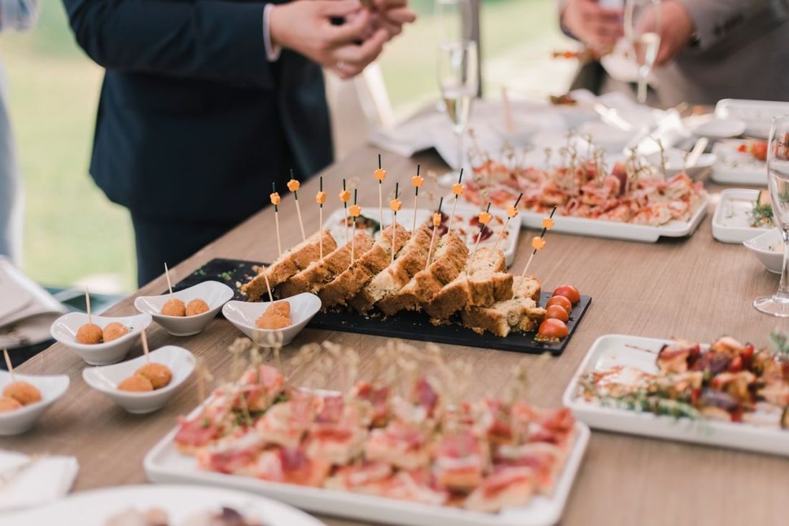
le traiteur · un événement
noms masculins
Le buffet préparé par le traiteur
↻ toucher pour retourner · toccare per girare
le traiteur · un événement il catering, la gastronomia · un evento
Le traiteur prépare les repas pour les fêtes et les événements : un mariage, un anniversaire, une fête d'entreprise. C'est aussi un magasin de plats cuisinés.
Le traiteur prepara i pasti per le feste e gli eventi: un matrimonio, un compleanno, una festa aziendale. È anche un negozio di piatti pronti, una gastronomia.
Pour le mariage, ils ont choisi un traiteur de la région.
Per il matrimonio hanno scelto un catering della zona.
Un mariage, c'est un grand événement pour toute la famille.
Un matrimonio è un grande evento per tutta la famiglia.
On peut écrire événement ou évènement : les deux sont corrects.
Si può scrivere événement o évènement: entrambe le forme sono corrette.
↻
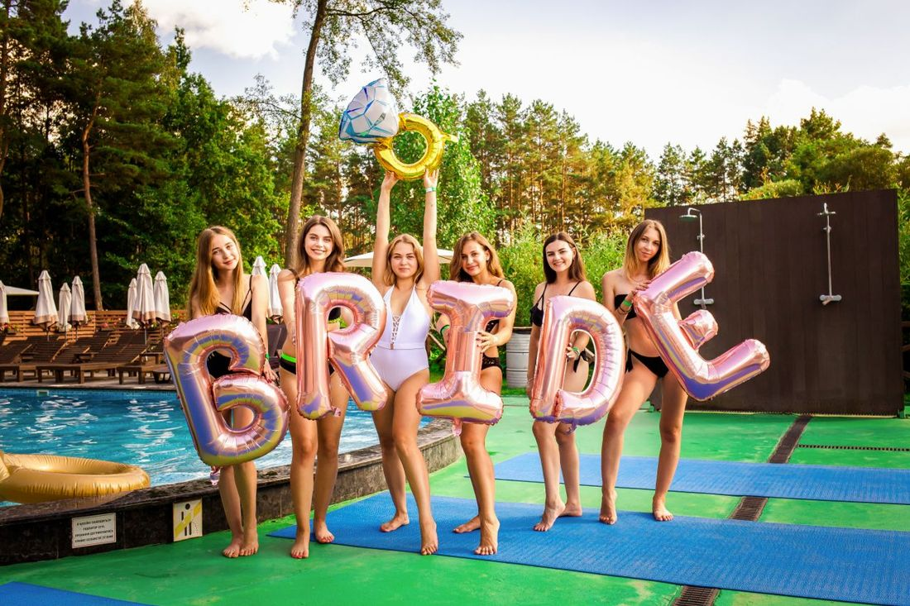
l'enterrement de vie de jeune fille · de garçon
noms masculins · EVJF, EVG
Un enterrement de vie de jeune fille au bord de la piscine
↻ toucher pour retourner · toccare per girare
l'enterrement de vie de jeune fille · de garçon l'addio al nubilato · al celibato
La grande fête entre amis avant le mariage. Un enterrement, ce sont des funérailles : on « enterre » sa vie de célibataire !
La grande festa tra amici prima del matrimonio. Un enterrement è un funerale: si «seppellisce» la vita da single!
Pour son enterrement de vie de jeune fille, ses amies l'ont emmenée à la mer.
Per il suo addio al nubilato, le amiche l'hanno portata al mare.
Le futur marié a fêté son enterrement de vie de garçon à Barcelone.
Il futuro sposo ha festeggiato l'addio al celibato a Barcellona.
↻
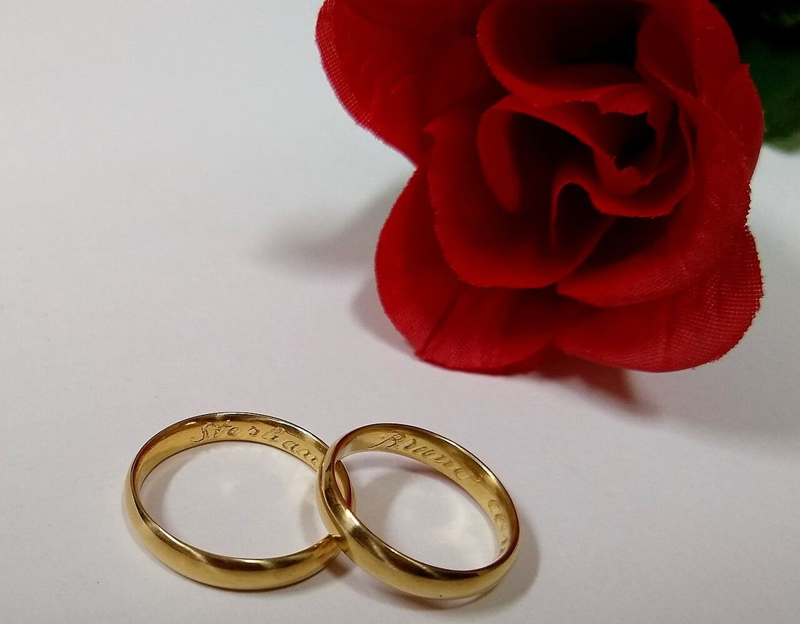
les alliances
nom féminin · une alliance
Deux alliances en or
↻ toucher pour retourner · toccare per girare
les alliances le fedi nuziali
Les deux bagues que les mariés échangent pendant la cérémonie. On porte souvent son alliance à l'annulaire gauche.
I due anelli che gli sposi si scambiano durante la cerimonia. Spesso si porta la fede all'anulare sinistro.
Les mariés échangent leurs alliances devant le maire.
Gli sposi si scambiano le fedi davanti al sindaco.
Une bague : n'importe quel bijou pour le doigt. La bague de fiançailles : on la reçoit avant le mariage.
Une bague: un anello qualsiasi. La bague de fiançailles: l'anello di fidanzamento.
↻
les témoins
nom masculin · un témoin
La mariée et ses amies, le jour du mariage
↻ toucher pour retourner · toccare per girare
les témoins i testimoni
Au mariage, les témoins signent le registre avec les mariés. Pour une femme, on dit souvent : elle est mon témoin.
Al matrimonio, i testimoni firmano il registro con gli sposi. Per una donna si dice spesso: elle est mon témoin (è la mia testimone).
Ma meilleure amie sera mon témoin.
La mia migliore amica sarà la mia testimone.
Il y a eu un petit accident et deux témoins ont tout vu.
C'è stato un piccolo incidente e due testimoni hanno visto tutto.
↻
la robe de mariée
nom féminin
Une robe de mariée
↻ toucher pour retourner · toccare per girare
la robe de mariée l'abito da sposa
La mariée, c'est la femme qui se marie ; le marié, c'est l'homme. Ensemble, ce sont les mariés.
La mariée è la sposa; le marié è lo sposo. Insieme sono les mariés, gli sposi.
Elle a essayé dix robes de mariée avant de trouver la bonne !
Ha provato dieci abiti da sposa prima di trovare quello giusto!
La mariée est arrivée en retard, comme le veut la tradition.
La sposa è arrivata in ritardo, come vuole la tradizione.
↻
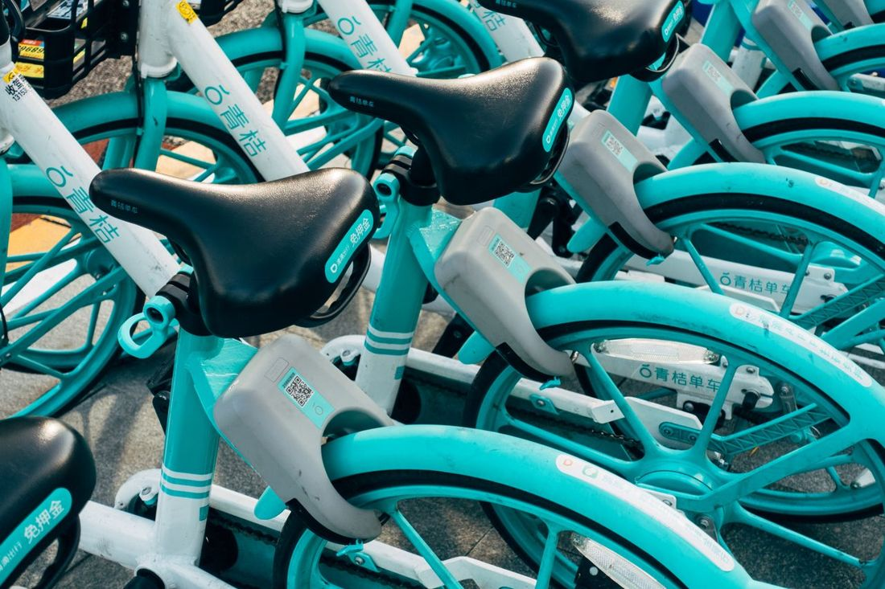
louer · la location
verbe du 1er groupe · nom féminin
Des vélos à louer
↻ toucher pour retourner · toccare per girare
louer · la location affittare, noleggiare · l'affitto, il noleggio
On loue un appartement, une salle, une voiture, un vélo, un costume. Faux ami : la location, c'est l'affitto ou il noleggio.
Si loue un appartamento, una sala, un'auto, una bici, un abito. Falso amico: la location è l'affitto o il noleggio.
Ils ont loué une salle au bord de la mer pour la fête.
Hanno affittato una sala in riva al mare per la festa.
En vacances, nous avons loué des vélos pour visiter l'île.
In vacanza abbiamo noleggiato delle bici per visitare l'isola.
Le propriétaire loue son appartement et le locataire le loue aussi : c'est le même verbe !
Il proprietario dà in affitto il suo appartamento e l'inquilino lo prende in affitto: in francese è lo stesso verbo!
↻
se renseigner (sur)
verbe pronominal
Une touriste se renseigne avec un plan de la ville
↻ toucher pour retourner · toccare per girare
se renseigner (sur) informarsi (su)
Je me suis renseignée sur les prix des traiteurs.
Mi sono informata sui prezzi dei catering.
Renseigne-toi avant de réserver les billets !
Informati prima di prenotare i biglietti!
Un renseignement = une information. À la gare, on va au guichet des renseignements.
Un renseignement = un'informazione. In stazione si va allo sportello informazioni.
↻
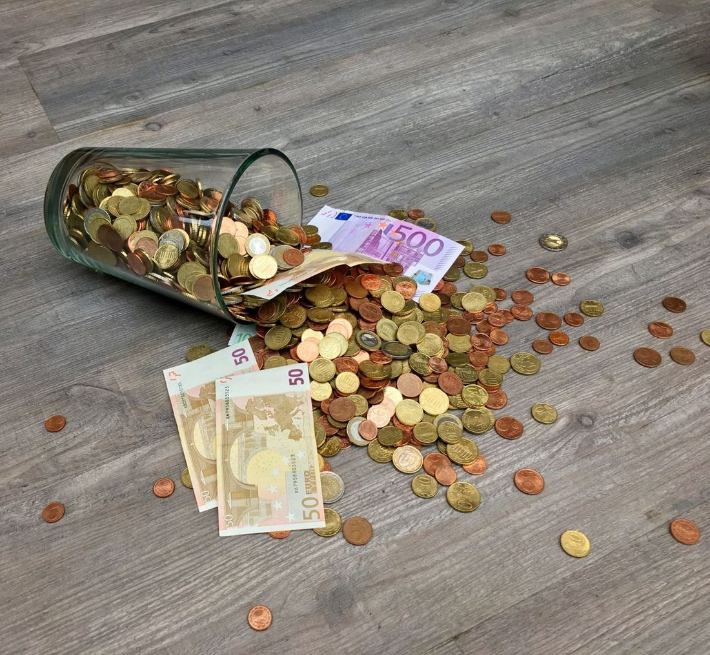
la cagnotte
nom féminin
Des pièces et des billets en euros
↻ toucher pour retourner · toccare per girare
la cagnotte la colletta, la raccolta di soldi
L'argent qu'un groupe met en commun pour un cadeau ou un projet. Aujourd'hui, on fait souvent une cagnotte en ligne.
Il denaro che un gruppo mette insieme per un regalo o un progetto. Oggi si fa spesso una colletta online.
Pour le cadeau de mariage, nous avons participé à une cagnotte.
Per il regalo di nozze abbiamo partecipato a una colletta.
Les collègues ont fait une cagnotte pour le départ de Martine.
I colleghi hanno fatto una colletta per la partenza di Martine.
On dit : faire une cagnotte, participer à une cagnotte. Au loto, la cagnotte, c'est la somme que l'on peut gagner.
Si dice: faire une cagnotte, participer à une cagnotte. Al lotto, la cagnotte è il montepremi.
↻
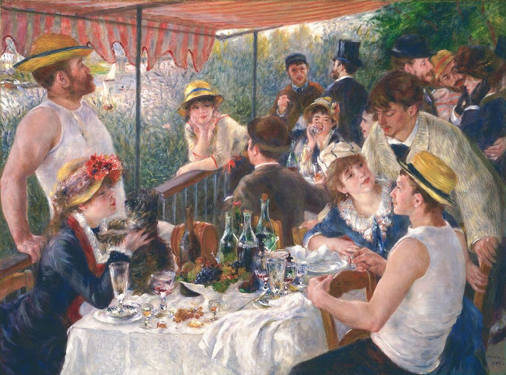
un apéritif dînatoire
nom masculin
Auguste Renoir, Le Déjeuner des canotiers, 1880-1881 · The Phillips Collection, Washington
↻ toucher pour retourner · toccare per girare
un apéritif dînatoire un apericena
Un apéritif très copieux qui remplace le dîner : petits fours, tartines, fromages… Entre amis, on dit souvent un apéro.
Un aperitivo molto abbondante che sostituisce la cena: stuzzichini, crostini, formaggi… Tra amici si dice spesso un apéro.
Samedi, nous organisons un apéritif dînatoire avec des amis.
Sabato organizziamo un apericena con degli amici.
Pour l'apéritif dînatoire, j'ai commandé des petits fours chez le traiteur.
Per l'apericena ho ordinato degli stuzzichini in gastronomia.
↻
C
La vie de tous les jours
La vita di tutti i giorni
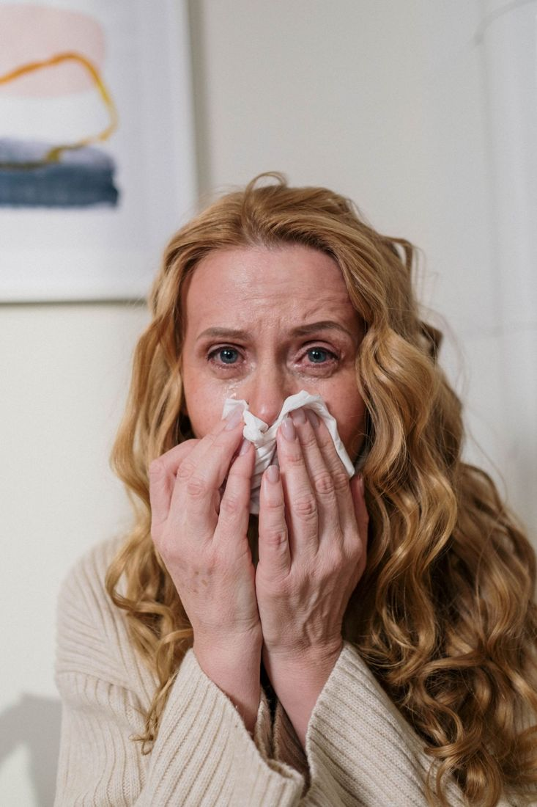
éternuer · à tes souhaits !
verbe du 1er groupe · expression
Atchoum !
↻ toucher pour retourner · toccare per girare
éternuer · à tes souhaits ! starnutire · salute!
Quand quelqu'un éternue, on dit « À tes souhaits ! » avec tu, ou « À vos souhaits ! » avec vous. La personne répond : « Merci ! »
Quando qualcuno starnutisce, si dice «À tes souhaits!» con il tu, o «À vos souhaits!» con il voi/Lei. La persona risponde: «Merci!»
Paolo a éternué trois fois de suite : « À tes souhaits ! »
Paolo ha starnutito tre volte di fila: «Salute!»
Pour s'amuser, au deuxième éternuement, on dit parfois : « À tes amours ! »
Per scherzo, al secondo starnuto, a volte si dice: «À tes amours!» (ai tuoi amori).
↻
un mois d'essai · essayer
nom masculin · verbe du 1er groupe
Un casque et un téléphone pour écouter de la musique
↻ toucher pour retourner · toccare per girare
un mois d'essai · essayer un mese di prova · provare
Essayer, c'est tester : une robe, un plat, un cours. Essayer de + infinitif, c'est faire un effort pour réussir.
Essayer significa provare: un abito, un piatto, un corso. Essayer de + infinito significa cercare di.
Cette application de musique offre un mois d'essai gratuit.
Questa app di musica offre un mese di prova gratuito.
J'essaie de dessiner un peu tous les jours.
Cerco di disegnare un po' tutti i giorni.
Présent : j'essaie, nous essayons. Futur : j'essaierai.
Presente: j'essaie, nous essayons. Futuro: j'essaierai.
↻
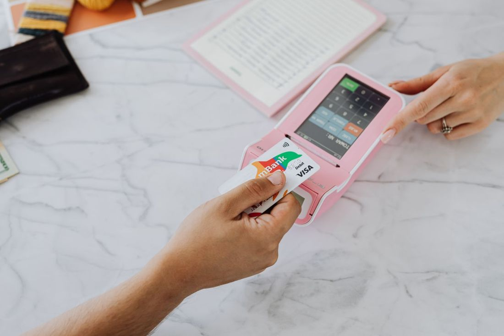
valider · un paiement sécurisé
verbe · nom masculin + adjectif
Un paiement par carte
↻ toucher pour retourner · toccare per girare
valider · un paiement sécurisé confermare, convalidare · un pagamento sicuro
Sur internet, on valide sa commande, puis on paie sur une page sécurisée. Sécuriser, c'est rendre sûr, protéger.
Su internet si conferma l'ordine, poi si paga su una pagina sicura. Sécuriser significa rendere sicuro, proteggere.
Clique sur « Valider » pour confirmer ta commande.
Clicca su «Conferma» per confermare il tuo ordine.
Pour la cagnotte en ligne, le paiement est sécurisé.
Per la colletta online il pagamento è sicuro.
Il faut sécuriser la piscine quand il y a des enfants.
Bisogna mettere in sicurezza la piscina quando ci sono bambini.
On valide aussi un billet de train ou de bus avant de monter.
Si convalida anche un biglietto del treno o dell'autobus prima di salire.
↻
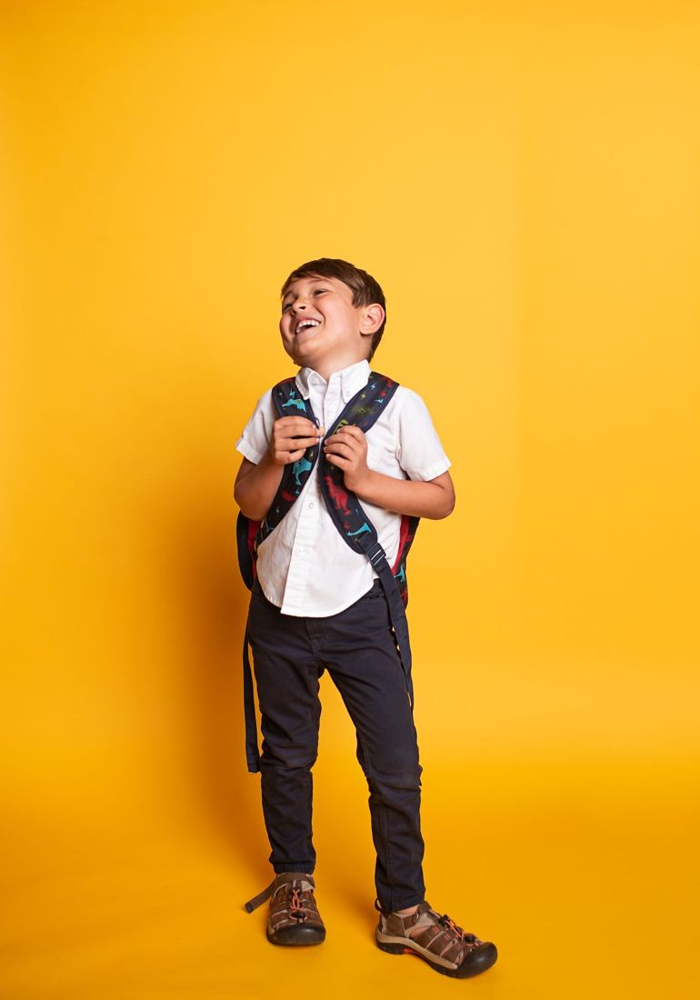
la rentrée scolaire
nom féminin
Prêt pour la rentrée !
↻ toucher pour retourner · toccare per girare
la rentrée scolaire l'inizio dell'anno scolastico
Le retour à l'école en septembre, après les grandes vacances. On parle aussi de la rentrée au travail, après l'été.
Il ritorno a scuola a settembre, dopo le vacanze estive. Si parla anche della rentrée al lavoro, dopo l'estate.
Pour la rentrée, Paolo a choisi un nouveau sac à dos.
Per l'inizio della scuola, Paolo ha scelto un nuovo zaino.
À la rentrée, je reprendrai mes cours de dessin.
A settembre riprenderò i miei corsi di disegno.
↻
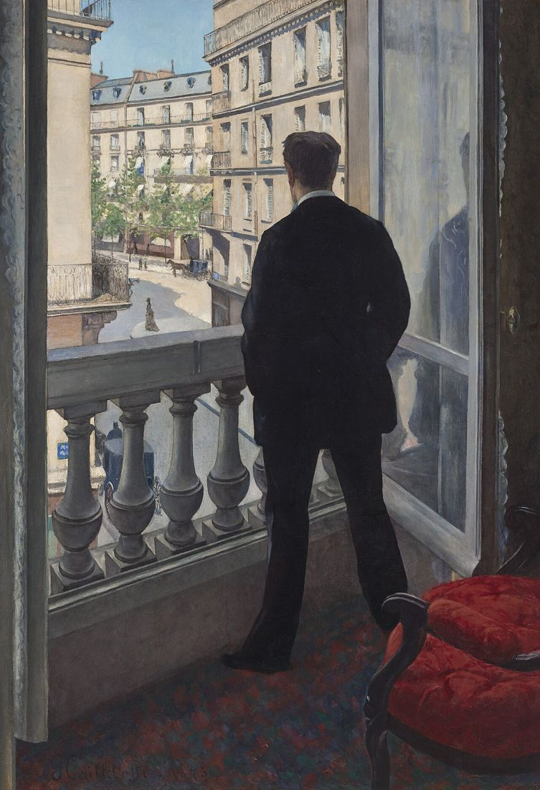
à côté de · dedans · dehors
préposition · adverbes
Gustave Caillebotte, Jeune homme à sa fenêtre, 1876 · J. Paul Getty Museum, Los Angeles
↻ toucher pour retourner · toccare per girare
à côté de · dedans · dehors accanto a · dentro · fuori
À côté de est suivi d'un nom. Dedans et dehors s'utilisent seuls. Avec un nom, on dit : dans la maison, à l'intérieur de, à l'extérieur de.
À côté de è seguito da un nome. Dedans e dehors si usano da soli. Con un nome si dice: dans la maison, à l'intérieur de, à l'extérieur de.
Sur le tableau, le jeune homme est dedans et il regarde la rue, dehors.
Nel quadro, il giovane è dentro e guarda la strada, fuori.
La boulangerie est à côté de notre immeuble.
La panetteria è accanto al nostro palazzo.
Il fait froid dehors : restons dedans !
Fa freddo fuori: restiamo dentro!
À côté de + le = à côté du : au concert, je me suis assise à côté du batteur.
À côté de + le = à côté du: al concerto mi sono seduta accanto al batterista.
↻
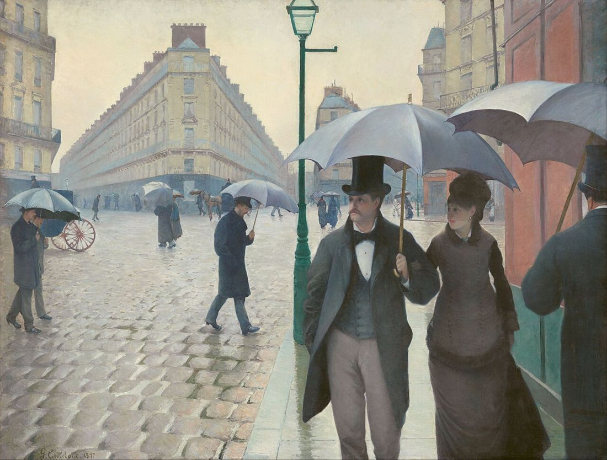
alors que
conjonction
Gustave Caillebotte, Rue de Paris, temps de pluie, 1877 · Art Institute of Chicago
↻ toucher pour retourner · toccare per girare
alors que mentre, invece
Alors que oppose deux idées. On peut le remplacer par tandis que. Le verbe est à l'indicatif.
Alors que contrappone due idee. Si può sostituire con tandis que. Il verbo è all'indicativo.
Paolo adore la batterie, alors que moi, je préfère le dessin.
Paolo adora la batteria, mentre io preferisco il disegno.
Il pleut à Paris, alors qu'à Nice il fait beau.
Piove a Parigi, mentre a Nizza c'è il sole.
Rappel : alors que exprime aussi le temps. Le téléphone a sonné alors que nous dînions.
Ripasso: alors que esprime anche il tempo. Il telefono ha squillato mentre cenavamo.
↻
2
Grammaire : le futur simple
Grammatica: il futuro semplice
Le futur simple : quand l'utiliser ?
Il futuro semplice: quando usarlo?
On utilise le futur simple pour parler de l'avenir : un projet, une prévision, une promesse.
Si usa il futuro semplice per parlare del futuro: un progetto, una previsione, una promessa.
L'été prochain, nous irons en Bretagne.
L'estate prossima andremo in Bretagna.
Demain, il fera beau sur la Côte d'Azur.
Domani farà bel tempo in Costa Azzurra.
Je te téléphonerai ce soir, promis !
Ti telefonerò stasera, promesso!
Le futur proche, aller + infinitif, parle d'un avenir tout près ou déjà décidé : je vais partir dans cinq minutes.
Il futur proche, aller + infinito, parla di un futuro vicinissimo o già deciso: parto tra cinque minuti.
La règle générale
La regola generale
On prend l'infinitif et on ajoute les terminaisons. Pour les verbes en -re, on enlève d'abord le e final : prendre → prendr-.
Si prende l'infinito e si aggiungono le desinenze. Per i verbi in -re si toglie prima la e finale: prendre → prendr-.
infinitif+-ai-as-a-ons-ez-ont
parlerparlerò, parlerai, parlerà, parleremo, parlerete, parleranno
finirfinirò, finirai, finirà…
prendreprenderò, prenderai, prenderà…
Astuce : les terminaisons ressemblent au verbe avoir au présent : j'ai, tu as, il a… Et on entend toujours le r avant la terminaison : je parlerai.
Trucco: le desinenze somigliano al verbo avoir al presente: j'ai, tu as, il a… E si sente sempre la r prima della desinenza: je parlerai, come parlerò.
Quelques verbes en -er qui changent un peu
Alcuni verbi in -er che cambiano un po'
Ces verbes gardent au futur la petite transformation du présent avec je.
Questi verbi conservano al futuro la piccola trasformazione del presente alla prima persona.
| acheter | comprerò | |
| se lever | mi alzerò | |
| appeler | chiamerò | |
| jeter | butterò | |
| essayer | proverò | |
| payer | pagherò |
Un verbe en -er est irrégulier : envoyer → j'enverrai.
Un verbo in -er è irregolare: envoyer → j'enverrai (manderò).
Les 8 verbes irréguliers à connaître
Gli 8 verbi irregolari da sapere
Le radical change, mais les terminaisons restent les mêmes : -ai, -as, -a, -ons, -ez, -ont.
La radice cambia, ma le desinenze restano le stesse: -ai, -as, -a, -ons, -ez, -ont.
êtreser-
Paolo sera content de jouer au basket samedi.
Paolo sarà contento di giocare a basket sabato.
avoiraur-
Ce week-end, nous aurons des invités pour l'apéro.
Questo fine settimana avremo ospiti per l'aperitivo.
allerir-
L'été prochain, j'irai voir les impressionnistes au musée d'Orsay.
L'estate prossima andrò a vedere gli impressionisti al museo d'Orsay.
fairefer-
Demain, il fera beau : nous mangerons dehors.
Domani farà bel tempo: mangeremo fuori.
venirviendr-
Mes amies viendront à l'apéritif dînatoire.
Le mie amiche verranno all'apericena.
pouvoirpourr-
Avec son casque, Paolo pourra jouer sans déranger personne.
Con le cuffie, Paolo potrà suonare senza disturbare nessuno.
voirverr-
Au mariage, tu verras la robe de la mariée.
Al matrimonio vedrai l'abito della sposa.
vouloirvoudr-
Après le mois d'essai, vous voudrez peut-être continuer.
Dopo il mese di prova forse vorrete continuare.
Deux verbes en entier
Due verbi per intero
Attention à l'orthographe : deux r dans je pourrai et je verrai. Retiens aussi : devoir → je devrai, savoir → je saurai, il faut → il faudra, il pleut → il pleuvra.
Attenzione all'ortografia: due r in je pourrai e je verrai. Ricorda anche: devoir → je devrai (dovrò), savoir → je saurai (saprò), il faut → il faudra (bisognerà), il pleut → il pleuvra (pioverà).
Avec quand et avec si
Con quand e con si
Après quand, on met le futur si l'action est future, comme en italien.
Dopo quand si mette il futuro se l'azione è futura, come in italiano.
Quand Paolo sera grand, il jouera dans un groupe.
Quando Paolo sarà grande, suonerà in un gruppo.
Mais après si, on met toujours le présent : si + présent, puis le futur.
Ma dopo si si mette sempre il presente: si + presente, poi il futuro.
S'il fait beau dimanche, nous irons à la plage.
Se domenica fa bel tempo, andremo in spiaggia.
si+présent→futur
Le pronom y
Il pronome y
Le pronom y : un lieu
Il pronome y: un luogo
Y remplace un lieu introduit par à, en, dans, chez, sur… C'est comme ci en italien.
Y sostituisce un luogo introdotto da à, en, dans, chez, sur… È come ci in italiano: ci vado = j'y vais.
Tu vas à la plage cet après-midi ? — Oui, j'y vais.
Vai in spiaggia oggi pomeriggio? — Sì, ci vado.
Paolo est au basket ? — Oui, il y est jusqu'à six heures.
Paolo è a basket? — Sì, c'è fino alle sei.
Vous habitez dans cet immeuble ? — Oui, nous y habitons depuis l'été dernier.
Abitate in questo palazzo? — Sì, ci abitiamo dall'estate scorsa.
Tu es allée chez le traiteur ? — Oui, j'y suis allée ce matin.
Sei andata in gastronomia? — Sì, ci sono andata stamattina.
Le pronom y : à + une chose
Il pronome y: à + una cosa
Y remplace aussi à + une chose ou une idée, avec les verbes construits avec à : penser à, réfléchir à, participer à, s'intéresser à, jouer à un sport, s'habituer à.
Y sostituisce anche à + una cosa o un'idea, con i verbi che reggono à: pensare a, riflettere su, partecipare a, interessarsi a, giocare a uno sport, abituarsi a.
Tu as participé à la cagnotte ? — Oui, j'y ai participé.
Hai partecipato alla colletta? — Sì, ci ho partecipato.
Paolo joue au basket ? — Oui, il y joue deux fois par semaine.
Paolo gioca a basket? — Sì, ci gioca due volte a settimana.
Tu penses à ton voyage ? — Oui, j'y pense tout le temps !
Pensi al tuo viaggio? — Sì, ci penso sempre!
Pour une personne, on n'utilise pas y. À + personne → lui, leur ou à lui, à elle. Je téléphone à ma sœur → je lui téléphone. Je pense à Paolo → je pense à lui.
Per una persona non si usa y. À + persona → lui, leur oppure à lui, à elle. Je téléphone à ma sœur → je lui téléphone (le telefono). Je pense à Paolo → je pense à lui (penso a lui).
Où placer y ?
Dove mettere y?
Y se place devant le verbe conjugué, ou devant l'infinitif.
Y si mette davanti al verbo coniugato, oppure davanti all'infinito.
| présent | Ci vado. | |
| négation | Non ci vado. | |
| passé composé | Ci sono andata. | |
| futur | Ci andrò domani. | |
| + infinitif | Ci andrò, sto per andarci. | |
| impératif | Vai! Andiamo! (va + s davanti a y) | |
| impératif négatif | Non andarci! |
À l'impératif, va prend un s devant y : vas-y ! Expressions utiles : on y va ! ça y est !
All'imperativo, va prende una s davanti a y: vas-y! Espressioni utili: on y va! (andiamo!) ça y est! (ecco fatto!)
3
Exercices
Esercizi
1
EXERCICE · VOCABULAIRE
Choisis le bon mot.
Scegli la parola giusta.
1
Paolo met son ______ pour jouer de la batterie électronique.
Paolo si mette le cuffie per suonare la batteria elettronica.
Paolo met son casque pour jouer de la batterie électronique.
Paolo si mette le cuffie per suonare la batteria elettronica.
2
Pour le cadeau de mariage, tous les amis ont participé à la ______.
Per il regalo di nozze tutti gli amici hanno partecipato alla colletta.
Pour le cadeau de mariage, tous les amis ont participé à la cagnotte.
Per il regalo di nozze tutti gli amici hanno partecipato alla colletta.
3
Les mariés échangent leurs ______ pendant la cérémonie.
Gli sposi si scambiano le fedi durante la cerimonia.
Les mariés échangent leurs alliances pendant la cérémonie.
Gli sposi si scambiano le fedi durante la cerimonia.
4
Annamaria éternue. Paolo lui dit : « ______ ! »
Annamaria starnutisce. Paolo le dice: «Salute!»
Annamaria éternue. Paolo lui dit : « À tes souhaits ! »
Annamaria starnutisce. Paolo le dice: «Salute!»
5
Le basket et la batterie, c'est très ______ : Paolo n'a plus beaucoup de temps libre.
Il basket e la batteria sono molto impegnativi: Paolo non ha più molto tempo libero.
Le basket et la batterie, c'est très prenant : Paolo n'a plus beaucoup de temps libre.
Il basket e la batteria sono molto impegnativi: Paolo non ha più molto tempo libero.
6
Avant de choisir un traiteur, je vais ______ sur les prix.
Prima di scegliere un catering, mi informerò sui prezzi.
Avant de choisir un traiteur, je vais me renseigner sur les prix.
Prima di scegliere un catering, mi informerò sui prezzi.
7
Samedi soir, nous faisons un ______ : il y aura des petits fours et des tartines.
Sabato sera facciamo un apericena: ci saranno stuzzichini e crostini.
Samedi soir, nous faisons un apéritif dînatoire : il y aura des petits fours et des tartines.
Sabato sera facciamo un apericena: ci saranno stuzzichini e crostini.
8
Ce site de musique propose un mois d'______ gratuit.
Questo sito di musica propone un mese di prova gratuito.
Ce site de musique propose un mois d'essai gratuit.
Questo sito di musica propone un mese di prova gratuito.
9
Il fait trop froid ______ : restons à la maison.
Fa troppo freddo fuori: restiamo a casa.
Il fait trop froid dehors : restons à la maison.
Fa troppo freddo fuori: restiamo a casa.
10
Le basket est très différent ______ tennis.
Il basket è molto diverso dal tennis.
Le basket est très différent du tennis.
Il basket è molto diverso dal tennis.
2
EXERCICE · FUTUR · RÈGLE GÉNÉRALE
Conjugue le verbe au futur simple.
Coniuga il verbo al futuro semplice.
louer
1
L'année prochaine, nous ______ une maison au bord de la mer.
L'anno prossimo affitteremo una casa in riva al mare.
L'année prochaine, nous louerons une maison au bord de la mer.
L'anno prossimo affitteremo una casa in riva al mare.
jouer
2
Paolo ______ au basket samedi matin.
Paolo giocherà a basket sabato mattina.
Paolo jouera au basket samedi matin.
Paolo giocherà a basket sabato mattina.
prendre
3
Tu ______ le train de huit heures ?
Prenderai il treno delle otto?
Tu prendras le train de huit heures ?
Prenderai il treno delle otto?
choisir
4
Les invités ______ leur menu chez le traiteur.
Gli invitati sceglieranno il loro menù dal catering.
Les invités choisiront leur menu chez le traiteur.
Gli invitati sceglieranno il loro menù dal catering.
dessiner
5
Je ______ un portrait de Paolo pour son anniversaire.
Disegnerò un ritratto di Paolo per il suo compleanno.
Je dessinerai un portrait de Paolo pour son anniversaire.
Disegnerò un ritratto di Paolo per il suo compleanno.
attendre
6
Vous ______ les mariés devant la mairie.
Aspetterete gli sposi davanti al municipio.
Vous attendrez les mariés devant la mairie.
Aspetterete gli sposi davanti al municipio.
essayer
7
J'______ la robe demain matin.
Proverò l'abito domani mattina.
J'essaierai la robe demain matin.
Proverò l'abito domani mattina.
appeler
8
Nous ______ le traiteur lundi.
Chiameremo il catering lunedì.
Nous appellerons le traiteur lundi.
Chiameremo il catering lunedì.
3
EXERCICE · FUTUR · VERBES IRRÉGULIERS
Conjugue le verbe irrégulier au futur simple.
Coniuga il verbo irregolare al futuro semplice.
faire
1
Demain, il ______ beau sur la Riviera.
Domani farà bel tempo sulla Riviera.
Demain, il fera beau sur la Riviera.
Domani farà bel tempo sulla Riviera.
aller
2
Nous ______ voir l'exposition Monet en mars.
Andremo a vedere la mostra di Monet a marzo.
Nous irons voir l'exposition Monet en mars.
Andremo a vedere la mostra di Monet a marzo.
avoir
3
Paolo ______ un nouveau professeur de batterie.
Paolo avrà un nuovo insegnante di batteria.
Paolo aura un nouveau professeur de batterie.
Paolo avrà un nuovo insegnante di batteria.
venir
4
Mes amies ______ à mon apéritif dînatoire.
Le mie amiche verranno al mio apericena.
Mes amies viendront à mon apéritif dînatoire.
Le mie amiche verranno al mio apericena.
pouvoir
5
Tu ______ me prêter ta partition ?
Potrai prestarmi il tuo spartito?
Tu pourras me prêter ta partition ?
Potrai prestarmi il tuo spartito?
voir
6
Vous ______ : la cérémonie sera magnifique !
Vedrete: la cerimonia sarà magnifica!
Vous verrez : la cérémonie sera magnifique !
Vedrete: la cerimonia sarà magnifica!
être
7
Je ______ ravie de vous voir au mariage.
Sarò felice di vedervi al matrimonio.
Je serai ravie de vous voir au mariage.
Sarò felice di vedervi al matrimonio.
vouloir
8
Après le mois d'essai, Paolo ______ sûrement continuer.
Dopo il mese di prova, Paolo vorrà sicuramente continuare.
Après le mois d'essai, Paolo voudra sûrement continuer.
Dopo il mese di prova, Paolo vorrà sicuramente continuare.
4
EXERCICE · FUTUR · UN TEXTE
Le mariage de Chiara : conjugue les verbes au futur simple.
Il matrimonio di Chiara: coniuga i verbi al futuro semplice.
se marier
1
Le 14 juin, mon amie Chiara ______ au bord du lac de Côme.
Il 14 giugno la mia amica Chiara si sposerà in riva al lago di Como.
Le 14 juin, mon amie Chiara se mariera au bord du lac de Côme.
Il 14 giugno la mia amica Chiara si sposerà in riva al lago di Como.
avoir
2
La cérémonie ______ lieu à onze heures.
La cerimonia avrà luogo alle undici.
La cérémonie aura lieu à onze heures.
La cerimonia avrà luogo alle undici.
signer
3
Ses deux témoins ______ le registre avec les mariés.
I suoi due testimoni firmeranno il registro con gli sposi.
Ses deux témoins signeront le registre avec les mariés.
I suoi due testimoni firmeranno il registro con gli sposi.
faire
4
Ensuite, nous ______ un apéritif dînatoire dans le jardin.
Poi faremo un apericena in giardino.
Ensuite, nous ferons un apéritif dînatoire dans le jardin.
Poi faremo un apericena in giardino.
servir
5
Le traiteur ______ des spécialités de la région.
Il catering servirà delle specialità della zona.
Le traiteur servira des spécialités de la région.
Il catering servirà delle specialità della zona.
venir
6
Paolo ______ avec moi : il adore les fêtes !
Paolo verrà con me: adora le feste!
Paolo viendra avec moi : il adore les fêtes !
Paolo verrà con me: adora le feste!
danser
7
S'il fait beau, nous ______ dehors jusqu'à minuit.
Se fa bel tempo, balleremo fuori fino a mezzanotte.
S'il fait beau, nous danserons dehors jusqu'à minuit.
Se fa bel tempo, balleremo fuori fino a mezzanotte.
partir
8
Quand les mariés ______ en voyage de noces, nous leur donnerons l'argent de la cagnotte.
Quando gli sposi partiranno per il viaggio di nozze, daremo loro i soldi della colletta.
Quand les mariés partiront en voyage de noces, nous leur donnerons l'argent de la cagnotte.
Quando gli sposi partiranno per il viaggio di nozze, daremo loro i soldi della colletta.
5
EXERCICE · Y, LUI OU LEUR ?
Choisis la bonne réponse.
Scegli la risposta giusta.
1
Tu penses à ton voyage en Provence ? — Oui, ______ pense souvent.
Pensi al tuo viaggio in Provenza? — Sì, ci penso spesso.
Tu penses à ton voyage en Provence ? — Oui, j'y pense souvent.
Pensi al tuo viaggio in Provenza? — Sì, ci penso spesso.
2
Tu as téléphoné à Paolo ? — Oui, ______ ai téléphoné.
Hai telefonato a Paolo? — Sì, gli ho telefonato.
Tu as téléphoné à Paolo ? — Oui, je lui ai téléphoné.
Hai telefonato a Paolo? — Sì, gli ho telefonato.
3
Vous allez au musée d'Orsay ? — Oui, nous ______ allons dimanche.
Andate al museo d'Orsay? — Sì, ci andiamo domenica.
Vous allez au musée d'Orsay ? — Oui, nous y allons dimanche.
Andate al museo d'Orsay? — Sì, ci andiamo domenica.
4
Tu as répondu à tes amies ? — Oui, ______ ai répondu.
Hai risposto alle tue amiche? — Sì, ho risposto loro.
Tu as répondu à tes amies ? — Oui, je leur ai répondu.
Hai risposto alle tue amiche? — Sì, ho risposto loro.
5
Paolo s'intéresse à la musique ? — Oui, il s'______ intéresse beaucoup.
Paolo si interessa alla musica? — Sì, se ne interessa molto.
Paolo s'intéresse à la musique ? — Oui, il s'y intéresse beaucoup.
Paolo si interessa alla musica? — Sì, se ne interessa molto.
6
Tu parles souvent à ta voisine ? — Oui, ______ parle tous les jours.
Parli spesso con la tua vicina? — Sì, le parlo tutti i giorni.
Tu parles souvent à ta voisine ? — Oui, je lui parle tous les jours.
Parli spesso con la tua vicina? — Sì, le parlo tutti i giorni.
6
EXERCICE · RÉPONDS AVEC Y
Complète la réponse avec y et le verbe. Attention au temps !
Completa la risposta con y e il verbo. Attenzione al tempo!
présent
1
Tu vas à la plage demain ? — Oui, ______ demain.
Vai in spiaggia domani? — Sì, ci vado domani.
Tu vas à la plage demain ? — Oui, j'y vais demain.
Vai in spiaggia domani? — Sì, ci vado domani.
négation
2
Paolo va au basket ce soir ? — Non, il ______ ce soir.
Paolo va a basket stasera? — No, non ci va stasera.
Paolo va au basket ce soir ? — Non, il n'y va pas ce soir.
Paolo va a basket stasera? — No, non ci va stasera.
passé composé
3
Vous êtes allés à Nice ? — Oui, nous ______ l'été dernier.
Siete andati a Nizza? — Sì, ci siamo andati l'estate scorsa.
Vous êtes allés à Nice ? — Oui, nous y sommes allés l'été dernier.
Siete andati a Nizza? — Sì, ci siamo andati l'estate scorsa.
futur
4
Tu iras chez le traiteur ? — Oui, ______ samedi.
Andrai in gastronomia? — Sì, ci andrò sabato.
Tu iras chez le traiteur ? — Oui, j'y irai samedi.
Andrai in gastronomia? — Sì, ci andrò sabato.
+ infinitif
5
On peut aller au cinéma ce soir ? — Oui, on peut ______ !
Possiamo andare al cinema stasera? — Sì, possiamo andarci!
On peut aller au cinéma ce soir ? — Oui, on peut y aller !
Possiamo andare al cinema stasera? — Sì, possiamo andarci!
impératif
6
Maman, je peux aller à l'entraînement ? — Oui, ______ !
Mamma, posso andare all'allenamento? — Sì, vai!
Maman, je peux aller à l'entraînement ? — Oui, vas-y !
Mamma, posso andare all'allenamento? — Sì, vai!
7
EXERCICE · TRADUCTION
Traduis en français, puis compare avec la correction.
Traduci in francese, poi confronta con la correzione.
1Paolo suona la batteria dall'estate scorsa.
Paolo joue de la batterie depuis l'été dernier.
Ta traduction est correcte ?
2Domani andremo in gastronomia per scegliere il menù.
Demain, nous irons chez le traiteur pour choisir le menu.
Ta traduction est correcte ?
3Il basket è molto diverso dal tennis.
Le basket est très différent du tennis.
Ta traduction est correcte ?
4Ci penso, ma non ci vado.
J'y pense, mais je n'y vais pas.
Ta traduction est correcte ?
5Se farà bello, faremo un apericena fuori.
S'il fait beau, nous ferons un apéritif dînatoire dehors.
Ta traduction est correcte ?
8
RÉFLEXION · FACULTATIVE
Le mariage aujourd'hui : grande fête ou petite cérémonie ?
Il matrimonio oggi: grande festa o piccola cerimonia?
Si tu as le temps, écris ton avis. Nous en parlerons au début de la prochaine leçon.
Se hai tempo, scrivi il tuo parere. Ne parleremo all'inizio della prossima lezione.
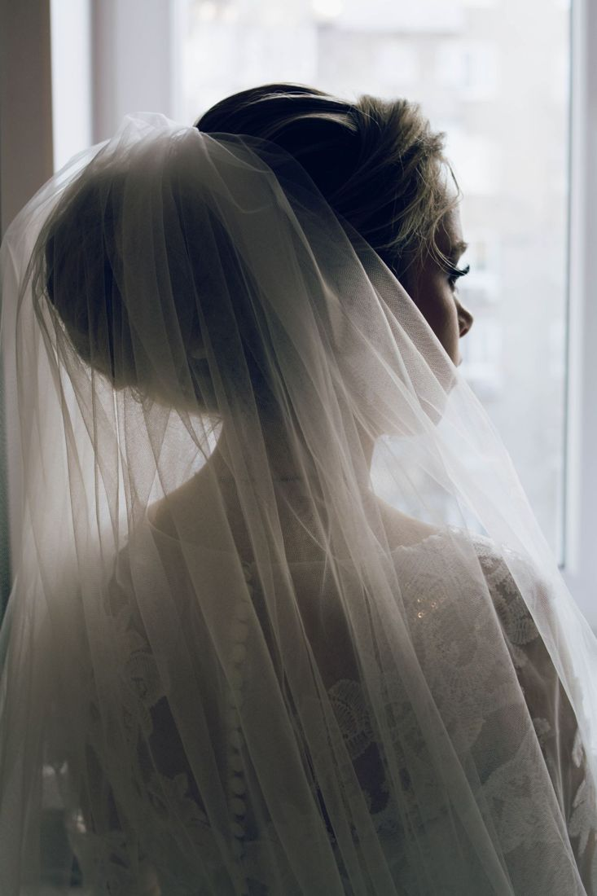
Une mariée devant la fenêtre, le jour J
Un mariage peut coûter très cher : la salle, le traiteur, la robe, la musique, les fleurs… Certains couples rêvent d'une grande fête avec beaucoup d'invités. D'autres préfèrent une petite cérémonie avec la famille et les amis proches, puis un beau voyage de noces. Et de plus en plus d'invités participent à une cagnotte en ligne au lieu d'offrir un cadeau.
Un matrimonio può costare molto: la sala, il catering, l'abito, la musica, i fiori… Alcune coppie sognano una grande festa con molti invitati. Altre preferiscono una piccola cerimonia con la famiglia e gli amici stretti, poi un bel viaggio di nozze. E sempre più invitati partecipano a una colletta online invece di fare un regalo.
Pour trouver tes idées · per trovare le idee
• Pour toi, qu'est-ce qui est le plus important dans un mariage ?
Per te, che cosa è più importante in un matrimonio?
• Grande fête ou petite cérémonie : que préfères-tu ? Pourquoi ?
Grande festa o piccola cerimonia: che cosa preferisci? Perché?
• Que penses-tu de la cagnotte en ligne à la place de la liste de mariage ?
Che cosa pensi della colletta online al posto della lista nozze?
• Comment seront les mariages dans vingt ans, à ton avis ?
Come saranno i matrimoni tra vent'anni, secondo te?
Mots utiles · parole utili
Organise ton texte · organizza il tuo testo
1
Introduction : présente le sujet en deux phrases.
Introduzione: presenta l'argomento in due frasi.
Aujourd'hui, beaucoup de couples se demandent…
2
Premier paragraphe : les avantages d'une grande fête.
Primo paragrafo: i vantaggi di una grande festa.
D'un côté, une grande fête permet de…
3
Deuxième paragraphe : les avantages d'une petite cérémonie.
Secondo paragrafo: i vantaggi di una piccola cerimonia.
De l'autre, une petite cérémonie…
4
Conclusion : ton avis et ton idée du mariage dans vingt ans.
Conclusione: il tuo parere e la tua idea del matrimonio tra vent'anni.
À mon avis… Dans vingt ans, les mariages seront…
Défi : utilise au moins trois verbes au futur simple et une fois le pronom y.
Sfida: usa almeno tre verbi al futuro semplice e una volta il pronome y.
Ton texte est enregistré automatiquement. Il tuo testo viene salvato automaticamente.
À revoir · da ripassare
Chaque erreur renvoie à la règle. · Ogni errore rimanda alla regola.
Tes réponses restent enregistrées sur cet appareil : tu peux fermer la page et revenir plus tard. Pour continuer sur un autre appareil, crée un lien et ouvre-le là-bas.
Le tue risposte restano salvate su questo dispositivo: puoi chiudere la pagina e tornare più tardi. Per continuare su un altro dispositivo, crea un link e aprilo lì.